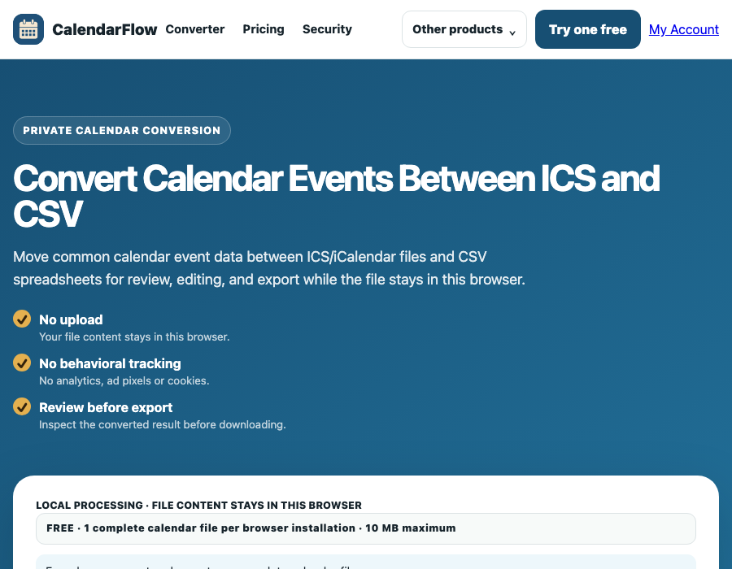

Convert ICS Calendar Events to CSV Rows
Turn an ICS or iCalendar export into a spreadsheet-friendly CSV for sorting, reviewing, or preparing a cleaned schedule. The conversion runs locally in your browser.

What this workflow does
ICS files contain calendar components and VEVENT properties. CalendarFlow reads common event values and writes one CSV row per VEVENT. The output columns are Title, Start, End, Location, Description, Categories, Recurrence, and UID.
That structure is useful for reviewing event lists in a spreadsheet, but a CSV row cannot express every property from a rich calendar file.
How to export ICS events to CSV
- Open the working converter and choose an
.icsor.icalfile. - Review the event count and the visible title, start, end, and location preview.
- Check any notice about recurrence rules and inspect dates before export.
- Leave the output format set to CSV, then download the generated spreadsheet.
Time and recurrence checks
A timestamp ending in Z represents UTC. Date-only values can represent all-day events, while named time zones and daylight-saving changes need a destination-side review. CalendarFlow carries recurrence text but does not expand rules or apply exception dates.
Limitations to expect
- Attendees, organizers, reminders, alarms, conferencing links, attachments, and custom properties are not included in the basic CSV schema.
- Named
VTIMEZONEdefinitions are not reconstructed as spreadsheet columns. - One VEVENT becomes one row; a recurring event is not turned into a row for every occurrence.
- Use the comma-separated CSV output as a review/editing format, not as a guarantee of provider-perfect round trips.
CalendarFlow overview · Open ICS in Excel · Export events to CSV · Private calendar converter
ICS to CSV questions
Can I open the CSV in a spreadsheet app?
Yes. The output is a standard comma-separated file with a header row, so it can be reviewed in spreadsheet software. Check date interpretation before saving changes.
Why are some calendar details missing?
The basic schema focuses on common VEVENT fields. Properties such as attendees, reminders, alarms, conferencing links, and provider-specific extensions are not mapped.
Is my ICS uploaded?
No. The converter reads the file locally in your browser.
Suite homepage · Pricing · Account access · Privacy · Security